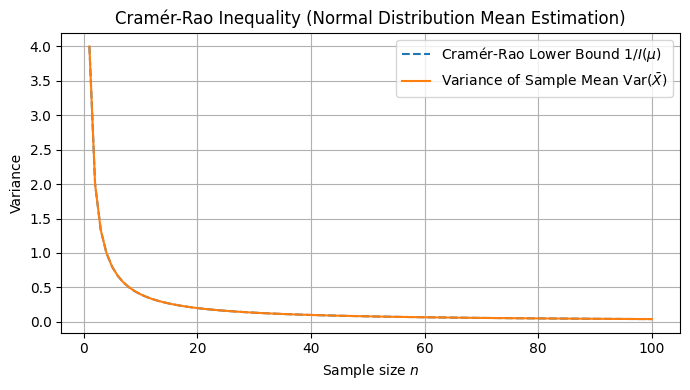
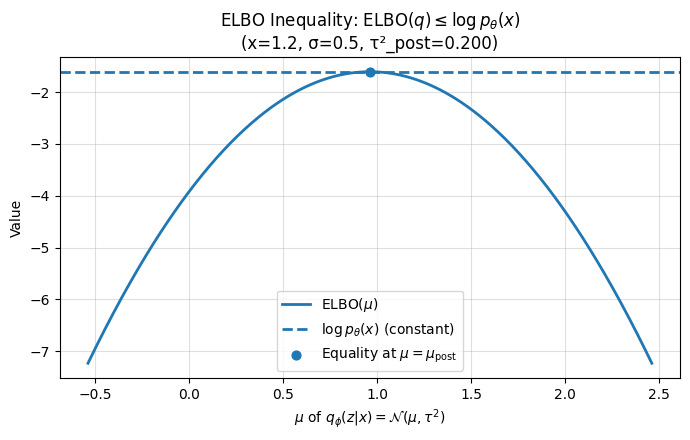

![P(X \geq a) \leq \frac{\mathbb{E}[X]}{a}](img20/equation (4).png)
Markov's inequality
Markov inequality
マルコフ界
マルコフ上界
マルコフ限界
Markov bound
集中不等式の最も単純なもの
E[X]はXの期待値
E[X]はXがとりうる値の平均的な値
非負確率変数がa以上となる確率の上限を示す不等式
期待値しか分からなくても大きな値の確率を安全側で上から抑える不等式
最悪の場合に備えた不等式
チェビシェフ不等式を1次モーメント(平均)で一般化した不等式
アンドレイ・マルコフの不等式
Andrey Markov inequality
.png)
.png)
![\mathbb{E}[|X|^p]^{1/p} \leq \mathbb{E}[|X|^q]^{1/q} \ (p \leq q)](img20/equation (10).png)
Moment inequality
p次・q次モーメントの大小関係を表す不等式
1次と2次モーメントの関係を表す不等式
モーメントは確率変数の平均的な性質や分布の形を特徴づける値の事
1次モーメントは平均
2次モーメントは分散
3次モーメントは歪度
3次モーメントは左右非対称性
4次モーメントは尖度
4次モーメントはとがり具合
マルコフ不等式を高次のモーメントで一般化した不等式
.png)
![\mathbb{E}[|X|] \leq \sqrt{\mathbb{E}[X^2]}](img20/equation (11).png)
.png)
Chebyshev's inequality
Chebyshev inequality
チェビシェフ界
チェビシェフ上界
チェビシェフ限界
Chebyshev bound
確率変数が平均からkσ以上離れる確率の上限を示す不等式
右辺は、平均からの距離が kσ以上である確率の上限を示す
σは標準偏差を示す
μは母集団の平均値を示す
どんな分布に適用可能な不等式
どのような分布でも、確率変数が平均から大きく離れる確率には上限があるのを示す不等式
マルコフ不等式を絶対値の2乗で特殊化した不等式
パフヌティ・チェビシェフの不等式
Pafnuty Chebyshev inequality
.png)
.png)
.png)
Cantelli's inequality
Cantelli inequality
カンテリ界
カンテリ上界
カンテリ限界
Cantelli bound
片側型のチェビシェフ不等式
左型のチェビシェフ不等式
右型のチェビシェフ不等式
片側の偏差の上限評価を行う不等式
チェビシェフ不等式を片側確率で一般化した不等式
フランチェスコ・カンテリの不等式
Francesco Cantelli inequality
.png)
.png)
ヤンソン不等式
ヤンソン型不等式
ヤンソン型の不等式
Janson's inequality
Janson inequality
相関を持つ多数の事象の合計が、期待値より大きく下振れする確率を指数的に上から抑える不等式
相関を持つ多数の事象の合計が、全体の合計が小さくなりすぎる確率を指数的に上から抑える不等式
相関は共分散
相関は確率変数が同時に1になる確率
依存確率変数の上限を与える不等式
部分集合の交差がある場合の確率の上限を与える不等式
μは各事象が起きる期待値合計
Δは事象間の依存度合いを表すパラメータ
チェビシェフ不等式を相関を持つ場合で一般化した不等式
チェビシェフ不等式をそれぞれの確率変数が独立でない場合で一般化した不等式
スヴェンテ・ヤンソンの不等式
Svante Janson inequality
.png)
![\mathbb{E}[fg] \geq \mathbb{E}[f]\,\mathbb{E}[g]](img20/equation (99).png)
Fortuin–Kasteleyn–Ginibre inequality
連関不等式
Association inequality
確率変数の間の連関があるときに成立する確率的な不等式
確率変数の間の関連性があるときに成立する確率的な不等式
確率変数の間のAssociationがあるときに成立する確率的な不等式
確率空間上の2つの増加関数が同時に成立する確率が、それぞれの確率の積以上になる事を示す不等式
確率空間上の2つの増加集合が同時に成立する確率が、それぞれの確率の積以上になる事を示す不等式
単調増加関数f, gと連関を持つ確率変数に対して成り立つ不等式。
正比例は正の連関
独立性よりも弱い条件で期待値の積を下から抑える不等式
確率論・統計力学などで重要な不等式
モノトンな関数f, gおよび連関を持つ確率変数X上で成り立つ不等式
モノトンは単調性
モノトンは単調増加関数
モノトンは単調減少関数
確率変数の集合が連関を持つ場合に有効な不等式
確率変数の集合が関連性を持つ場合に有効な不等式
確率変数の集合がAssociationを持つ場合に有効な不等式
チェビシェフ不等式を増加関数上で一般化した不等式
チェビシェフ不等式を正の連関を持つ確率空間上で一般化した不等式
チェビシェフ不等式を正比例を持つ確率空間上で一般化した不等式
キース・フォルタンとピーター・カステレインとジャン・ジニブレの不等式
Kees Fortuin & Pieter Kasteleyn & Jean Ginibre inequality
.png)
![\mathbb{E}[f(X)g(X)] \geq \mathbb{E}[f(X)]\mathbb{E}[g(X)]](img20/equation (98).png)
.png)
Harris's inequality
Harris inequality
連関不等式
Association inequality
確率変数の間の連関があるときに成立する確率的な不等式
確率変数の間の関連性があるときに成立する確率的な不等式
確率変数の間のAssociationがあるときに成立する確率的な不等式
独立な部分集合上で定義された増加関数f, gに対し、Cov(f(X), g(X)) ≥ 0が成り立つことを示す不等式
正の連関・正の相関が保たれることを保証する不等式
確率変数の集合が連関を持つ場合に有効な不等式
確率変数の集合が関連性を持つ場合に有効な不等式
確率変数の集合がAssociationを持つ場合に有効な不等式
確率変数の独立性を正の連関で一般化した不等式
セオドア・ハリスの不等式
Theodore Harris inequality
.png)
![\mathrm{Var}(Z) \leq \frac{1}{2} \sum_{i=1}^n \mathbb{E}[(Z-Z_{(i)})^2]](img20/equation (8).png)
エフロン・スタインの不等式
エフロン・シュタイン不等式
エフロン・シュタインの不等式
Efron–Stein inequality
複数の独立な確率変数の関数の分散が、各変数を1つだけ変えたときの変動の合計で上から抑えられることを示す不等式
複数の関数の分散の上限を示す不等式
Varは分散を示す
ジャックナイフ推定に使用される不等式
ジャックナイフ推定は各観測値を1つずつ抜いて推定を繰り返すことで、推定量のバイアスや分散を評価・補正する再標本法
有界差分を評価する不等式
分散の定義を条件付き独立で一般化した不等式
条件付き独立はX ⊥ Y | Z
条件付き独立はZが与えられたときに、XとYは無関係になることを表す
ブラッドリー・エフロンとチャールズ・スタインの不等式
ブラッドリー・エフロンとチャールズ・シュタインの不等式
Bradley Efron & Charles Stein inequality
.png)
![\mathrm{Var}(Z) \leq \frac{1}{2} \sum_{i=1}^n \mathbb{E}[(Z-Z_{(i)})^2]](img20/equation (9).png)
.png)
ポポヴィッチ分散不等式
ポポヴィチュの分散不等式
ポポヴィチュ分散不等式
ポポヴィチウの分散不等式
ポポヴィチウ分散不等式
Popoviciu's inequality on variances
Popoviciu inequality on variances
ある実数値のデータが最小値aと最大値bの間に収まっている時、そのデータの分散は最大(b/a)^2/4になる事を示す不等式
有界確率変数X(a < X < b)の分散の最大値を示す不等式
分散の上限評価として使われる不等式
aは最小値
bは最大値
Xは取りうる値
分散はデータのばらつきを示す統計量の指標
分散の定義を区間上の分布で一般化した不等式
分散の定義を具体的な区間幅で特殊化した不等式
ティベリウ・ポポヴィッチ分散不等式
ティベリウ・ポポポヴィチュの分散不等式
ティベリウ・ポポビチウの分散不等式
Tiberiu Popoviciu inequality on variances
.png)
.png)

Inequality for sum of variances
2つの確率変数の和の分散を、それぞれの分散と共分散で上から抑える不等式。
2つの確率変数が独立ならVar(X+Y)=Var(X)+Var(Y)
分散の定義を一般の依存構造にも拡張して一般化した不等式
分散の定義を高次元ベクトルにも拡張して一般化した不等式
和の分散公式を一般の依存構造にも拡張して一般化した不等式
和の分散公式を高次元ベクトルにも拡張して一般化した不等式
.png)

.png)
Cramér–Rao inequality
クラメール・ラオ界
クラメール・ラオ限界
クラメール・ラオ下限
Cramér–Rao bound
推定量の分散の下限を示す不等式
パラメータ推定の精度限界を示す不等式
正規分布の平均推定を行う不等式
不偏推定量の分散下界を情報量行列で一般化した不等式
Varは分散を示す
θは真のパラメータ値
θは1つに決まっている値
θは現実には未知だが、理論上は固定
ハットθはパラメータθの不偏推定量
ハットθは母数θの推定値
ハットθは特定の統計的量
不偏推定量は母集団のパラメータを平均的に当てる推定量
I(θ)はFisher(フィッシャー)情報量を示す
Fisher情報量は未知パラメータの推定精度の理論的な限界を決める情報の量
Fisher情報量はあるパラメータについてどれだけの情報がデータに含まれているかを測定するための指標
ハラルド・クラメールとカリャンプディ・ラオの不等式
Harald Cramér & Calyampudi Rao inequality

.png)
.png)
Oracle inequality
モデル選択や学習理論のリスク上限を示す不等式
過剰リスクに関する非漸近的な上限を示す不等式
真の最良モデルとの差を評価する不等式
汎化誤差の評価する不等式
オラクルは理想的な性能
Rはリスク関数
RはRisk Function
R()はリスク関数
R()はモデルの性能を定量化したもの
θはパラメータ
infを達成するθはオラクル
ハットθは推定量
ハットθは推定値
ハットθは推定されたパラメータ値
ハットθはデータから得た推定量
R(ハットθ)は平均的な誤差
R(ハットθ)は期待値としての損失
R(ハットθ)はデータ平均損失
R(ハットθ)は推定量θの元でのリスク
R(ハットθ)はモデルのリスク
Cは定数倍
Cは通常1以上
Δは誤差
クラメール・ラオの不等式を統計モデル・学習理論で一般化した不等式
.png)
.png)
![\mathbb{E}_{Q}[L(h)] \leq \mathbb{E}_{Q}[\hat{L}(h)] + \sqrt{\frac{KL(Q||P)+\log\frac{2\sqrt{n}}{\delta}}{2(n-1)}}](img20/equation (14).png)
PAC-Bayes inequality
PAC-Bayes界
PAC-Bayes境界
PAC-Bayes上界
PAC-Bayes限界
PAC-Bayes bound
PACはProbably Approximately Correct
ベイズ事前・事後分布のKLダイバージェンスに基づく汎化誤差の上限を示す不等式
汎化誤差の上限を与える不等式
未知データでの誤差の上限を与える不等式
分類器の汎化誤差評価を行う不等式
Qは事後分布
Qは学習後の仮説分布
Pは事前分布
E[L(h)]はL(h)がとりうる値の平均的な値
E_Q[L(h)]はQで選んだhの期待損失
Lは損失関数の期待値
Lは期待損失
Lは期待損失関数
Lは損失関数
LはLoss function
ハットLはサンプル上の平均損失
E_Q[ハットL(h)]はQで選んだhのサンプル上の期待損失
hはモデル
hは関数
hは入力の関数
hは仮説空間に属する仮説
hはモデルクラスに属する仮説
hは仮説
KL(Q||P)は分布QからPのカルバックライブラー情報量
KL(Q||P)は分布QからPの相対エントロピー
nは訓練データ数
δは失敗確率
δは信頼度
PAC-Bayes境界を近似推論の手続きとして実装したのが変分ベイズ推論
PAC-Bayes境界を近似推論する手続きに落とし込んだのが変分ベイズ推論
PAC-Bayes境界を近似的に最適化する方法が変分ベイズ推論
変分ベイズ推論を理論保証の視点で見直したのがPAC-Bayes境界
変分ベイズ推論を学習理論的に評価したのが PAC-Bayes境界
変分ベイズ推論の方が先
PAC-Bayes境界をKLダイバージェンスによって下から解釈したものが変分下限（ELBO）
PAC-Bayes不等式は、ベイズ汎化誤差バウンドを学習アルゴリズム一般で一般化した不等式
PAC-Bayes不等式は、ベイズリスク境界を事後分布・事前分布の特定選択で特殊化した不等式
ベイズリスク境界はベイズ推定におけるリスク(平均損失、誤差)をどれだけ小さくできるかについての理論的な下限を与える式
.png)
![\mathbb{E}_{Q}[L(h)] \leq \mathbb{E}_{Q}[\hat{L}(h)] + \sqrt{\frac{KL(Q||P)+\log\frac{2\sqrt{n}}{\delta}}{2(n-1)}}](img20/equation (15).png)
Evidence Lower BOund
変分下界 (Variational lower bound)
生成モデルや変分推論で使う確率の計算を簡単にするための近似式
生成モデルや変分推論で使う下界の不等式
観測データxの確率 log pθ(x) を下から押さえる不等式
観測データxの確率 log pθ(x) を下界を作る不等式
ログ周辺尤度の下界：log pθ(x) を下から抑える不等式
ELBO最大化≡q(z|x)をpθ(z|x)に近づける
ELBO を大きくする ≒ 近似分布 q(z∣x) を真の事後分布 pθ(z∣x) に近づける
ELBO最大化≡事後KL最小化
ELBO を大きくする ≒ 近似事後分布 q(z∣x) と真の事後分布 pθ(z∣x) のKL を小さくする
下界（lower bound）なので数値が大きいほど尤度下界が引き上がる
下界（lower bound）なので数値が大きいほど尤度の見積もりが改善される
変分下限（ELBO）を最大化する手続きが変分ベイズ推論
変分下限（ELBO）を上から評価したものがPAC-Bayes境界
変分ベイズ推論はベイズ事後分布をKLダイバージェンスを最小化した近似分布で表す手法
変分下限（ELBO）は、Jensenの不等式 を 変分推論 で一般化した不等式
変分下限（ELBO）は、PAC-Bayes不等式 を ベイズ推論 に特殊化した不等式

![\mathbb{E}[\max_{1\leq i\leq n} |X_i|] \leq C \sqrt{\log n} \max_{1\leq i\leq n} (\mathbb{E}|X_i|^2)^{1/2}](img20/equation (71).png)
ネミロフスキー不等式
Nemirovski's inequality
Nemirovski inequality
ネミロフスキー界
ネミロフスキー上界
ネミロフスキー限界
Nemirovski bound
独立な確率変数列X_iについて最大値の期待値を評価する集中不等式
最大値の平均が√log nスケールで上から抑えられることを示す不等式
Cは定数
Cは2か3
高次元確率論で応用される集中不等式
分散の和の不等式を高次元のノルム空間上で一般化した不等式
分散の和の不等式を一般の凸集合上で一般化した不等式
ポアンカレの不等式を線形関数の場合に限定して特殊化した不等式
ポアンカレの不等式を特定のノルムの場合に限定して特殊化した不等式
Khintchine inequality を 特定のノルムや次元 で特殊化した不等式
アルカディ・ネミロフスキーの不等式
Arkadi Nemirovski inequality
![\mathbb{E}[\max_{i=1}^n |X_i|] \leq C \sqrt{\log n} \sigma](img20/ダウンロード (68).png)
![\mathbb{E}[\max_{i=1}^n |X_i|] \leq C \sqrt{\log n} \sigma](img20/equation (72).png)
.png)
.png)
.png)
.png)
.png)
.png)
.png)
.png)
.png)
.png)
.png)
.png)
.png)
![|\,\mathbb{E}[A_0B_0]+\mathbb{E}[A_0B_1]+\mathbb{E}[A_1B_0]-\mathbb{E}[A_1B_1]\,| \le 2](img20/equation (101).png)
_.png)
.png)
.png)
.png)
.png)
.png)
.png)
.png)
.png)
.png)
.png)
.png)
.png)
.png)
![P(S_n \geq t) \leq \inf_{s>0} \mathbb{E}[e^{s S_n}] e^{-st}](img20/equation (24).png)
.png)
![P(\bar{X}_n - \mathbb{E}[\bar{X}_n] \geq t) \leq \exp\left(-\frac{2nt^2}{(b-a)^2}\right)](img20/equation (21).png)
.png)
.png)
.png)
.png)
.png)
![P\left(S_n - \mathbb{E}[S_n] \geq t\right) \leq \exp\left(-\frac{t^2}{2V + 2Mt/3}\right)](img20/equation (84).png)
.png)
.png)
![P(f(X) - \mathbb{E}[f(X)] \geq t) \leq \exp\left(-\frac{2t^2}{\sum c_i^2}\right)](img20/equation (23).png)
.png)
.png)
![\mathbb{E}[\sup_{t \in T} X_t] \leq K \int_0^{\infty} \sqrt{\log N(T, d, \epsilon)} d\epsilon](img20/equation (25).png)
.png)
.png)
.png)
.png)
.png)
.png)
.png)
.png)
.png)
.png)
.png)
![P\left( X - \mathbb{E}[X] \geq t \right) = P(X \geq t) \leq \exp\left( -\frac{t^2}{2} \right)](img20/equation (94).png)
.png)
.png)
.png)
.png)
.png)
.png)
.png)
.png)
.png)
.png)
.png)
.png)
.png)
.png)
.png)
.png)

.png)

.png)
.png)
_______________.png)
______________________.png)
.png)
.png)
.png)
.png)
.png)
.png)
.png)
.png)
.png)
.png)
.png)
.png)
.png)
.png)
.png)
.png)
![f(\mathbb{E}[X]) \leq \mathbb{E}[f(X)] \quad (f:\text{convex})](img20/equation (33).png)
.png)
![\log(\mathbb{E}[X]) \leq \mathbb{E}[\log X]](img20/equation (34).png)
.png)
.png)
.png)

.png)

.png)
.png)
.png)
.png)
.png)
.png)
.png)
.png)
.png)
.png)
.png)
.png)
.png)
.png)
![P(\sup_n S_n \geq a) \leq \frac{\mathbb{E}[e^{\lambda S_0}]}{e^{\lambda a}}](img20/equation (51).png)
.png)
.png)
![P\left(\sup_{k \leq n} |M_k| \geq \lambda\right) \leq \frac{\mathbb{E}[|M_n|]}{\lambda}](img20/equation (63).png)
.png)
![P(\sup_{k \leq n} |M_k| \geq \lambda) \leq \mathbb{E}[|M_n|]/\lambda](img20/equation (64).png)
![c_p \mathbb{E}\left[[M]_T^{p/2}\right] \leq \mathbb{E}\left[\sup_{t\leq T} |M_t|^p\right] \leq C_p \mathbb{E}\left[[M]_T^{p/2}\right]](img20/equation (65).png)
.png)
![c_p E[[M]_T^{p/2}] \leq E[\sup_{t\leq T} |M_t|^p] \leq C_p E[[M]_T^{p/2}]](img20/equation (66).png)
.png)
.png)
.png)